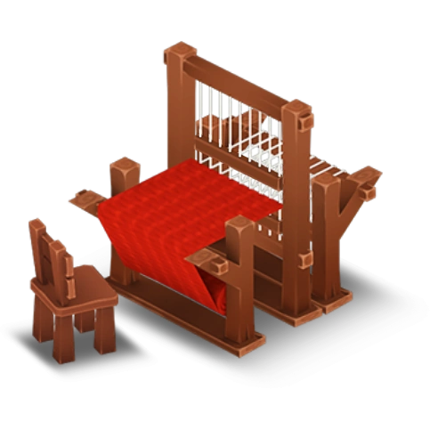

The Loom is a production building unlocked at experience level 17. It costs 3,200 💰 and takes 1 day (or 47 💎) to build the Loom. It gives players 24 â when completed.
Sweater
Level 17
⏱ 2 h
âââ 1 h 42 min
âââ 1 h 42 min
💰 151
â 18
â 18
Cotton Fabric
Level 18
⏱ 30 min
âââ 25 min
âââ 25 min
💰 108
â 13
â 13
Blue Woolly Hat
Level 19
⏱ 1 h
âââ 51 min
âââ 51 min
💰 111
â 13
â 13
Blue Sweater
Level 20
⏱ 3 h
âââ 2 h 53 min
âââ 2 h 53 min
💰 208
â 24
â 24
Red Scarf
Level 48
⏱ 2 h 30 min
âââ 2 h 7 min
âââ 2 h 7 min
💰 288
â 35
â 35
Flower Shawl
Level 71
⏱ 1 h 30 min
âââ 1 h 16 min
âââ 1 h 16 min
💰 295
â 35
â 35